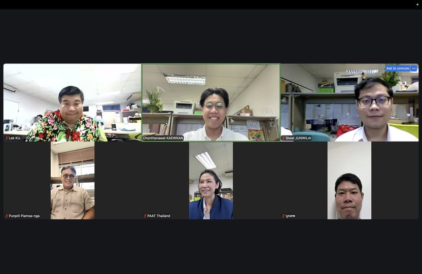

จากวิศวกรรมคอมพิวเตอร์สู่การมีส่วนร่วมของสังคมผ่าน Decidim
{kind=link}

บทความนี้สะท้อนภาพของการมีส่วนร่วมของสังคมที่เกิดจากองค์ความรู้ทางวิศวกรรมคอมพิวเตอร์อย่างเป็นรูปธรรม ผ่านการพัฒนาและบริหารจัดการระบบ Decidim ซึ่งเป็นแพลตฟอร์ม open-source สำหรับการมีส่วนร่วมของประชาชน และถูกใช้งานจริงในหลายเมืองสำคัญของโลก
จุดสำคัญไม่ใช่เพียงการมีเทคโนโลยีที่ดี แต่คือการทำให้เทคโนโลยีนั้นกลายเป็นต้นแบบการใช้งานจริง เริ่มจากระดับมหาวิทยาลัย แล้วค่อยถ่ายทอดต่อไปยังภาครัฐและองค์กรปกครองส่วนท้องถิ่น นี่คือเส้นทางจากแล็บไปสู่ผลลัพธ์ที่จับต้องได้ในสังคม
ความน่าสนใจของกรณีนี้อยู่ที่บทบาทของนิสิตระดับปริญญาโทและแล็บวิจัยที่ไม่ได้เพียงสร้างระบบขึ้นมา แต่เข้ามามีส่วนสำคัญในการพัฒนาและบริหารจัดการระบบจริง ทำให้งานวิชาการไม่ได้แยกขาดจากการปฏิบัติ แต่กลายเป็นส่วนหนึ่งของกระบวนการสร้างความสามารถใหม่ให้กับองค์กรและสังคม
เมื่อเทคโนโลยีถูกเชื่อมกับนโยบายและการใช้งานจริง
การเชิญผู้แทนจากแวดวงรัฐประศาสนศาสตร์และรัฐศาสตร์เข้ามาร่วมดูงานและหารือ ยังสะท้อนว่าการสร้างระบบลักษณะนี้ไม่ใช่เรื่องเทคนิคอย่างเดียว แต่ต้องเชื่อมกับนโยบาย โครงสร้างการตัดสินใจ และบริบทของหน่วยงานที่จะนำไปใช้
แนวคิดที่จะเริ่มจากการใช้เป็นต้นแบบภายในมหาวิทยาลัยก่อน แล้วค่อยต่อยอดไปสู่หน่วยงานภาครัฐและองค์กรปกครองส่วนท้องถิ่น เช่น อบจ.ขอนแก่น แสดงให้เห็นรูปแบบของ technology transfer ที่ไม่ได้หยุดที่การส่งมอบซอฟต์แวร์ แต่รวมถึงการถ่ายทอดวิธีคิดและรูปแบบการทำงานด้วย
นี่คือตัวอย่างของมหาวิทยาลัยที่ทำให้เทคโนโลยีมีความหมายต่อสาธารณะ
ในภาพรวม กรณีนี้เป็นตัวอย่างของมหาวิทยาลัยที่ทำหน้าที่มากกว่าการสร้างผลงานทางวิชาการ เพราะมันแสดงให้เห็นว่ามหาวิทยาลัยสามารถเป็นตัวกลางเชื่อมเทคโนโลยี นโยบาย และการปฏิบัติจริงเข้าด้วยกัน เพื่อให้เกิดระบบที่ช่วยขยายการมีส่วนร่วมของสังคมอย่างเป็นรูปธรรม
คุณค่าของงานแบบนี้จึงไม่อยู่แค่ในตัวแพลตฟอร์ม แต่คือการทำให้สังคมเห็นว่าองค์ความรู้จากมหาวิทยาลัยสามารถถูกออกแบบและถ่ายทอดไปสู่ภาคส่วนต่าง ๆ ได้จริง หากมีการจัดวางบทบาทและความร่วมมืออย่างถูกทาง